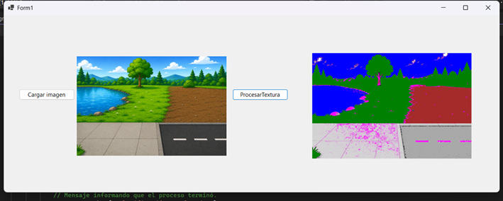
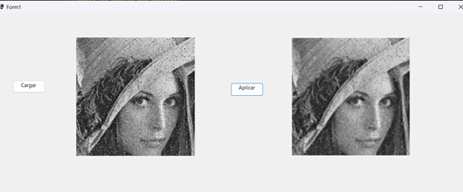
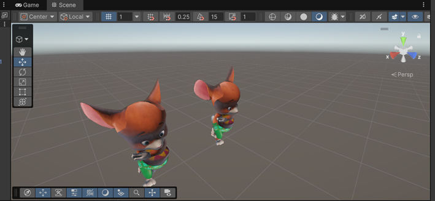

Introducción
El presente portafolio reúne tres ejercicios desarrollados durante la materia de Producción Multimedia. Los proyectos abarcan procesamiento digital de imágenes, aplicación de filtros espaciales y animación sincronizada con audio dentro del motor Unity.
Captura del Proyecto

Ejercicio A - Clasificación de Superficies
Este proyecto implementa una clasificación de superficies mediante análisis de color y textura.
El sistema identifica:
- Agua
- Vegetación
- Tierra
- Asfalto
- Cemento
- Sombras
Para la clasificación se utilizaron características HSV (Hue, Saturation y Brightness) junto con análisis de textura local.
Resultado
El algoritmo genera una nueva imagen donde cada superficie es representada mediante un color específico.
Captura del Proyecto

Ejercicio B - Filtro de Suavizado por Promedio
Este ejercicio implementa un filtro espacial de promedio utilizando una ventana de 3x3 píxeles.
El objetivo principal es reducir el ruido presente en una imagen y generar una apariencia más uniforme.
Funcionamiento
- Se carga una imagen.
- Se analiza una vecindad de 3x3.
- Se calcula el promedio RGB.
- Se genera una nueva imagen suavizada.
Este tipo de filtro es ampliamente utilizado como preprocesamiento en visión artificial.
Captura del Proyecto

Ejercicio C - Cover de "La Vaca Lola"
Este proyecto consistió en realizar una producción multimedia de la canción infantil "La Vaca Lola" utilizando la identidad de un artista reconocido.
Proceso Realizado
- Se generó el audio principal utilizando la voz del artista Canserbero.
- Se creó una pista musical de acompañamiento para el fondo.
- Se descargó un personaje animado desde Mixamo.
- El personaje fue importado dentro de Unity.
- Se sincronizaron las animaciones con el ritmo de la canción.
- Se añadieron texturas y escenarios.
- Se desarrolló un script para controlar el movimiento de la cámara.
Tecnologías Utilizadas
- Unity
- Mixamo
- Audio Editing
- C#
Captura del Proyecto

Ver Proyecto 3D InteractivoDescarga de Proyectos
En el siguiente archivo ZIP se encuentran los tres proyectos desarrollados.
Descargar ZIP de los ProyectosGuía de Instalación y Ejecución
Proyecto A y B (Visual Studio)
- Instalar Visual Studio 2022.
- Instalar la carga de trabajo .NET Desktop Development.
- Abrir la solución (.sln).
- Compilar el proyecto.
- Presionar F5 para ejecutar.
Proyecto C (Unity)
- Instalar Unity Hub.
- Instalar la versión de Unity utilizada.
- Abrir la carpeta del proyecto.
- Esperar la importación de Assets.
- Abrir la escena principal.
- Presionar Play.
Requisitos Mínimos
- Windows 10 o superior.
- 8 GB de RAM.
- Visual Studio 2022.
- Unity Hub.
- .NET Framework compatible.